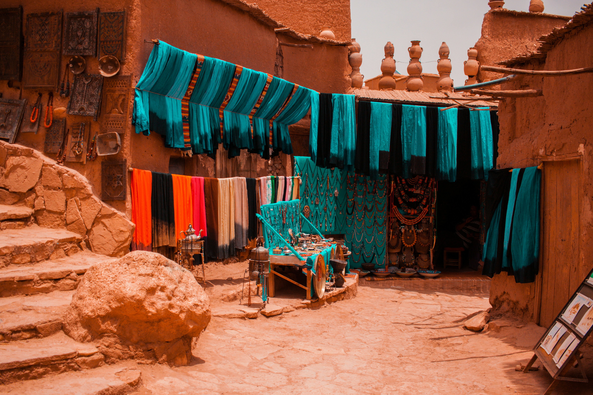

⚡ Fes Highlights & Private Exclusives
- Al-Qarawiyyin University: Stand outside the oldest continuously operating university in the world, founded in 859 AD by Fatima al-Fihri.
- Chouara Leather Tanneries: Exclusive balcony view over the iconic 11th-century stone dye pits without tourist crowds.
- Bou Inania & Al-Attarine Madrasas: Intricate cedar carvings, marble courtyards, and museum-grade geometric zellige mosaics.
- Volubilis Roman UNESCO Ruins: Private day tour to breathtaking 2,000-year-old Roman mosaic floors, triumphal arches, and olive presses.
- Imperial Meknes & Bab Mansour: Visit Sultan Moulay Ismail’s monumental capital and royal granaries.
The Intellectual & Spiritual Soul of the Kingdom
If Marrakech is the theatrical heartbeat of Morocco, Fes is its scholarly, contemplative mind. Walking through the monumental cobalt gate of Bab Bou Jeloud into Fes el-Bali is an immediate portal into the 14th century. Mules loaded with spices clip-clop past bakeries that have used the exact same wood-fired ovens for four hundred years.
Because Fes el-Bali has zero cars, a knowledgeable private guide is invaluable. We match you with licensed cultural scholars who weave together the profound tapestry of Moroccan philosophy, Andalusian architectural influx, and Jewish Mellah craftsmanship.
"Fes does not yield its secrets to those who rush. Behind plain cedar doors lie riad courtyards so opulent they rival the Alhambra in Granada."
— ROAM MOROCCO HISTORICAL NOTESBeyond the Medina, our private chauffeur service connects Fes effortlessly to the Roman ruins of Volubilis, the holy town of Moulay Idriss, and the dramatic mountain passes leading toward the Sahara Desert.
Sample 3-Day Curated Fes Heritage Circuit CULTURE & ROMAN HERITAGE
Ancient Guilds, Madrasas & Chouara Tanneries
Meet your licensed scholar guide at your riad. Explore the stunning 14th-century Bou Inania Madrasa, the Nejjarine Museum of Wooden Arts & Crafts, and Al-Qarawiyyin mosque library. Visit the Chouara Tanneries from a private viewing terrace with fresh mint sprigs. Stroll through the copper and brass artisan alleys of Place Seffarine, followed by a panoramic late-afternoon drive to the Marinid Tombs overlooking the entire golden valley of Fes.
Volubilis Archaeological Site → Moulay Idriss → Meknes
Your private chauffeur picks you up in an executive 4x4 at 09:00 AM. Travel 1 hour west through olive groves to Volubilis, a UNESCO World Heritage site featuring the best-preserved Roman ruins in North Africa. Explore the House of Orpheus and the Labors of Hercules mosaics. Continue to the pilgrimage town of Moulay Idriss for lunch with mountain views. Finish the afternoon in the 17th-century Imperial City of Meknes, admiring the towering Bab Mansour gate before returning to Fes.
Day Trip to Chefchaouen OR Departure toward Erg Chebbi
Depending on your travel schedule, choose between a stunning scenic day trip into the northern Rif Mountains to explore the blue alleys of Chefchaouen, OR embark on our signature desert journey south toward the Middle Atlas cedar forests and Merzouga dunes.
What's Included in Your Private Fes Tour
✔ INCLUDED
- Licensed English-speaking Fes cultural guide for full day
- Dedicated private air-conditioned transport for day excursions
- Full day excursion to Volubilis, Moulay Idriss & Meknes
- Entry tickets to historical Madrasas & Volubilis archaeological site
- Pickup and drop-off directly at your Fes riad
- Luggage handling and porter service into car-free Medina
✕ NOT INCLUDED
- Lunches and alcoholic drinks
- Discretionary tips for guides and chauffeur
- Personal craft purchases in artisan souks
Frequently Asked Questions: Fes Private Tours
Can cars drive inside the Fes Medina?
No. Fes el-Bali is the largest contiguous car-free urban zone on the planet. Cars and vans can only drop passengers at designated gates (such as Bab Bou Jeloud or Place R'cif). For all our guests staying in riads, our team coordinates private luggage porters with traditional hand-carts to transport your bags safely directly to your riad doorway.
Can we do a day trip to Chefchaouen from Fes?
Yes. The drive takes approximately 3.5 to 4 hours each way through the scenic Rif Mountains. With our private chauffeur, you depart early (07:30 AM), enjoy 4 to 5 relaxed hours in Chefchaouen, and return comfortably to Fes by dinner.
Is Fes or Marrakech better for shopping?
Marrakech has more modern, chic bohemian boutique designs, but Fes is universally recognized as the master craft capital for traditional pottery (blue Fes zellige), copper lamps, and authentic vegetable-tanned leather.